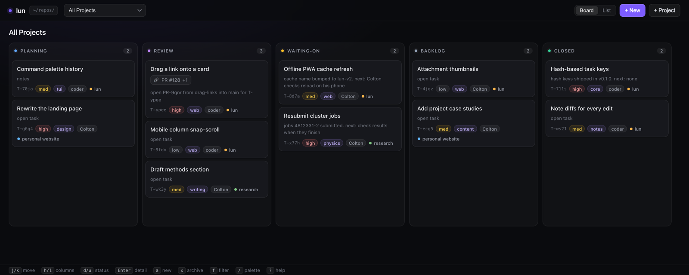
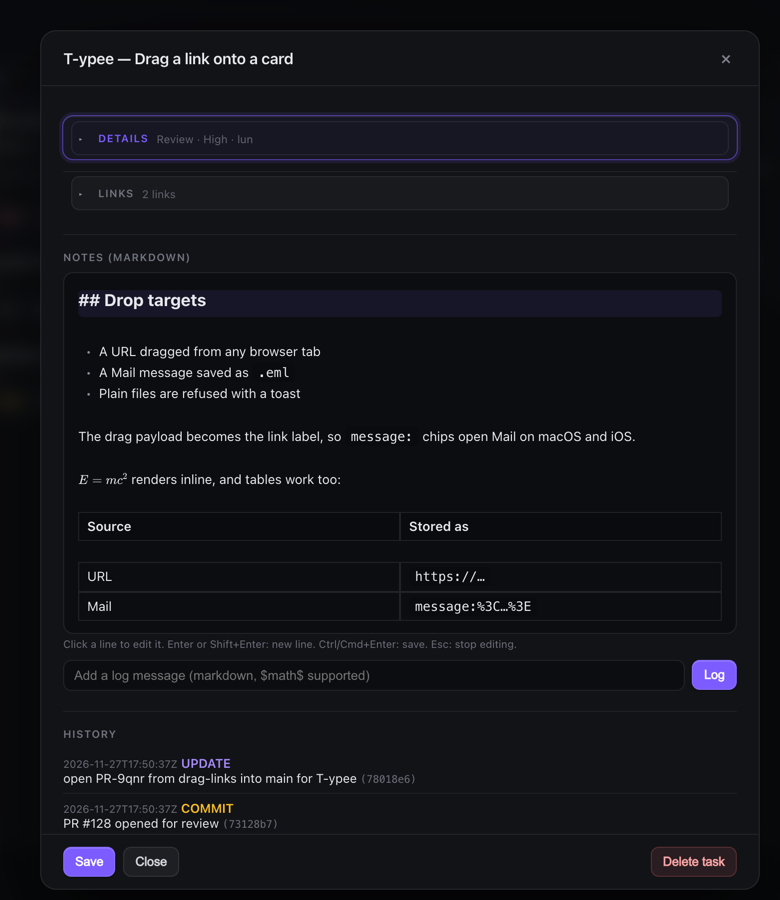

Agents drive the CLI
Every operation is a plain command with plain-text output. No client library, no schemas to memorise: an agent files and moves tasks with ordinary shell calls.
lun brief --last
CLI-first task tracking for macOS
lun is a low-dependency task and project tracker built for agents and the humans who supervise them. File work from the shell, then watch the same tasks move across a real kanban board — in the browser, on your phone, or in the terminal.
Two users, one database
Most tools make you choose: an API for the robot or a UI for the person. lun gives both the same SQLite-backed board, with no sync layer in between.
Every operation is a plain command with plain-text output. No client library, no schemas to memorise: an agent files and moves tasks with ordinary shell calls.
lun brief --last
Status moves, edits and notes all land in a git-style history, newest first. Read the last three entries of one task instead of loading its whole life.
lun log T-4k2p -3 --oneline
A live kanban board in the browser, a phone-friendly PWA, and a full-screen TUI. All three write to the same file, so the human sees exactly what the agent wrote.
lun serve
Live demo
A working taste of the web UI. Drag a card between columns. Open one to see notes, links and history. Press d / u on a focused card to shift it.
The toolbox
Notes, links, attachments, pull requests, history — each task carries its own context, and the whole board lives in one directory you can back up with cp.
For agents
One line per open task. The three newest commits. Only the fields you asked for. Output stays small unless you ask for more.
History
Who changed what, when, and why. Hashes, HEAD~N, --since, and one-line slices.
Notes
Obsidian-style live preview: every line rendered, the one you edit shows its raw text. Math, tables, checkboxes and code included.
.eml fileE = mc² $E = mc^2$
Links
Drag a URL from any browser tab, or an .eml from Mail, onto a card. It becomes a chip that opens the message on macOS and iOS.
Terminal
The same board without a browser. j/k to move, Enter to open, / for the command palette.
Pull requests
Open a PR record, see its branches and history, merge it — the task lands in closed. lun does the bookkeeping; git does the merge.
Boards
No global config. lun walks up from where you are until it finds .lun/lun.db — one board per directory, work and personal kept apart.
Storage
Tasks, logs, note diffs, links and attachments all point into .lun/. WAL mode keeps CLI and web writes safe side by side.
Small print
Shell completion for zsh and bash, an nvim plugin, Obsidian import, and macOS open integration.
Phone
The web UI is a PWA: installable, touch-friendly, offline-capable, and live over WebSocket when the server is up.
lun grep--fieldscpNo mockups
Five columns, drag to move, a chip for the first link, and the whole keyboard inside the task window. The screenshot below is a real lun serve session.

Planning → Review → Waiting-On → Backlog → Closed. Drag a card to change its status; d/u does the same from the keyboard.
The task window
Notes render live as markdown. Links are chips you can click. History sits underneath, colour-coded by action, with the commit message that explains it.
dd; undo with u.j/k between fields, i to insert, ⌘Enter to save, Esc to collapse a section.
The agent loop
lun is designed for the way agents actually work: a quick digest, a targeted read, a single write with the reason attached. No whole-board dumps required.
lun brief gives one line per open task — a session-start digest, not a wall of JSON.--fields and --json narrow any read to the columns the question needs.--message turns the write into the commit line; closed stdin accepts the defaults, so nothing blocks.lun serve is running are safe. The board catches up on its next refresh.lun log <hash> --old-notes rolls notes back to before any recorded edit.# what is open, one line each
$ lun brief --project "lun" --last
T-ypee review high lun Drag a link onto a card PR #128 open
T-9fdv review low lun Mobile column snap-scroll open for review
T-8d7a waiting-on med lun Offline PWA cache refresh cache bumped
# only the newest three entries of one task
$ lun log T-ypee -3 --oneline
2026-11-27 09:42 coder UPDATE PR #128 merged | status: review -> closed
2026-11-27 09:12 coder COMMIT PR #128 opened for review
2026-11-27 09:04 coder CREATE open task
# move it, with the reason as the commit line
$ lun task T-ypee --status review --message "PR #128 open"
Updated T-ypee: status -> review
Committed: PR #128 open
# read only what changed since log 120
$ lun log --since 120 --oneline
(empty — nothing new)Full-screen TUI
A purple, vim-flavoured terminal app for when the shell is already home. The command prompt takes the same commands as the CLI — just drop the lun.
Context-aware commands: log targets the current task, add task the current project, status --board the current board.
Get started
Builds a single stripped binary. SQLite is compiled in, so there is no system library to install. Requires macOS and a Rust toolchain.
Homebrew tap is on the roadmap. make uninstall removes the binary.
Build the release binary
makeInstall it on your PATH
make installMake a board and open it
cd ~/repos && lun init && lun servelun alone opens the TUI